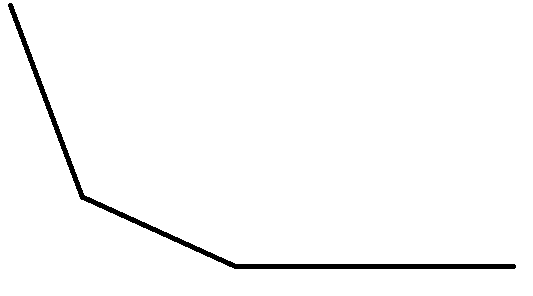

byd ，这么好用的东西怎么我上了大学才会啊 QAQAQAQAQAQAQAQ 。
例题
题目链接：https://codeforces.com/problemset/problem/713/C
题目大意：给一个数字 $±1$ 的代价是 $1$ ，问给一个序列花最小多少代价可以变成严格递增序列。
$O(n^2)$ 的做法在此就不再赘述，主要讲解 slope trick 做法。
做法
注意到一个事情，我们设 $f_{i}$ 表示在处理完当前前缀后，最后一个数值是 $i$ 的最小代价。
那么每次添加一个数值 $a$ 就有两部分 $dp$ 过程：
$f_{i}=f_{i}+|a-i|$
$f_{i}=\min\limits_{j\le i}f_{j}$
可以观察到，$f$ 是长成下面那样的凸函数：

而 slope trick 就是维护斜率 $+1$ 的位置，也就是维护折点，但是有的折点如果要 $+k(k>1)$ 咋整？那就维护 $k$ 个折点。（一般来说还要额外的维护一些值来保证函数能够唯一确定，比如本题就要维护当斜率为 $0$ 的值，用来确定函数的高度，同时也是最后的答案）
可以发现，上面两个过程分别对应：
- 在 $a$ 处添加两个折点。
- 弹出最靠右的折点，并且维护函数的高度。
然后就做完了，这个过程可以用堆维护，从而得到时间复杂度为 $O(n\log{n})$ 的做法。
1
2
3
4
5
6
7
8
9
10
11
12
13
14
15
16
17
18
19
20
21
| #include<bits/stdc++.h>
using namespace std;
typedef long long LL;
const int N = 3e3 + 5;
int n;
LL a[N];
priority_queue<LL> p;
int main(){
cin >> n;
LL ans = 0ll;
for(int i = 1; i <= n; i++){
cin >> a[i];
a[i] -= i;
p.push(a[i]);
p.push(a[i]);
ans += abs(p.top() - a[i]);
p.pop();
}
cout << ans << "\n";
return 0;
}
|
slope trick
具体来说，当序列 $dp$ 满足：
- 连续。
- 分段线性。
- 凸函数。
就可以考虑 slope trick 。
而且这样的函数还有很好的性质，若 $f,g$ 满足，则 $f+g$ 也满足，且新的折点可重集合是 $f,g$ 可重集合合并起来。（是合并，不是并）
练习
1. A New Beginning
题目链接：https://codeforces.com/problemset/problem/1534/G
题目大意：在平面上，你初始在原点，每次只能往右往上走，然后有 $n$ 个点，你在 $(x,y)$ 与访问 $(x_i,y_i)$ 的代价是 $\max(|x_i-x|,|y_i-y|)$ ，然后问你访问所有点的最小代价。（访问并不会导致实际的移动）
做法
可以发现，$(x_i,y_i)$ 在 $(x,y)$ $x+y=x_i+y_i$ 的时候访问一定是代价最小的，直接从斜线角度来看这道题目。
也可以换个角度，这个是切比雪夫距离，切比雪夫距离和曼哈顿距离可以互相转化，转化成曼哈顿距离以后就显然了，在 $x$ 坐标相等的时候访问就是代价最小的。
观察一下 $dp$ 式子，可以发现，我们要对这个函数维护两个过程。
- 插入一个 V 字。
- 将斜率为 $0$ 的平台延长。
用数据结构维护就是维护四个东西：
- 斜率为 $0$ 的平台左/右边的折点。（可以用堆维护）
- 平台高度。
- 平台宽度。
时间复杂度：$O(n\log{n})$ 。
1
2
3
4
5
6
7
8
9
10
11
12
13
14
15
16
17
18
19
20
21
22
23
24
25
26
27
28
29
30
31
32
33
34
35
36
37
38
39
40
41
42
43
44
45
46
47
48
49
50
51
52
53
54
55
56
57
58
59
60
| #include<bits/stdc++.h>
using namespace std;
typedef long long LL;
const int N = 8e5 + 5;
struct node{
LL pos, val;
}a[N];
int n;
priority_queue<LL, vector<LL>, less<LL> > l;
priority_queue<LL, vector<LL>, greater<LL> > r;
LL lazy, ans = 0ll;
LL gettop(int type){
LL val;
if(!type) val = l.top();
else val = r.top() + lazy;
return val;
}
void poptop(int type){
if(!type) l.pop();
else r.pop();
}
void pushval(LL val, int type){
if(!type) l.push(val);
else r.push(val - lazy);
}
int main(){
cin >> n;
for(int i = 1; i <= n; i++){
LL x, y;
cin >> x >> y;
a[i].pos = x + y;
a[i].val = x;
}
sort(a + 1, a + n + 1, [](node x, node y){return x.pos < y.pos;});
l.push(a[1].val);
r.push(a[1].val);
for(int i = 2; i <= n; i++){
lazy += a[i].pos - a[i - 1].pos;
if(a[i].val <= gettop(0)){
ans += abs(a[i].val - gettop(0));
pushval(gettop(0), 1);
poptop(0);
pushval(a[i].val, 0);
pushval(a[i].val, 0);
}
else if(a[i].val >= gettop(1)){
ans += abs(a[i].val - gettop(1));
pushval(gettop(1), 0);
poptop(1);
pushval(a[i].val, 1);
pushval(a[i].val, 1);
}
else{
pushval(a[i].val, 0);
pushval(a[i].val, 1);
}
}
cout << ans << "\n";
return 0;
}
|
参考文献
https://zhuanlan.zhihu.com/p/389740015